Which characteristics explain Islamophobia best: education, region, age, populism?
In Chapter 7 you described variables one at a time and compared them in pairs. In Chapter 8 you validated the scales empirically. Now you bring the methods of the previous chapters together in one explanatory model: several predictors at the same time, each controlled for the influence of the others.
Note
Research journal: Where are you in your mini study? Last stage. This chapter completes the sequence: from the raw item via the scale and the bivariate findings to the multivariate model, and finally to a publication-ready figure. If you work through the last exercises, you have a complete, reproducible research result on Islamophobia in Germany in 2023. This is what a discussion at a conference or a term paper would ask for.
9.1 What this chapter is about
The real strength of quantitative social research only shows when you look at more than two variables at the same time. In Chapter 7 you showed that Islamophobia correlates positively with populism and negatively with education, and that it is higher in the East than in the West. But this immediately raises the next question: Are these all independent effects, or are they related?
Perhaps the East–West difference is not “real” at all. Perhaps it exists only because the average level of education is somewhat lower in the East, and the actual driver is education. Perhaps populism works quite differently for people with low education than for people with high education. Bivariate tests cannot answer such multicausal questions. You need a model that takes several predictors into account at the same time and shows what remains for each variable when the others are controlled for.
This is the core of multivariate methods: they isolate the effect of one variable by “partialling out” all the others at the same time. If the effect of region becomes smaller as soon as education is in the model, you know that part of the apparent East–West difference was really an education effect. If it stays the same, you know that region is a predictor in its own right.
This chapter takes you through the four most important tools of this kind:
Factorial ANOVA: when two categorical factors act at the same time, possibly with an interaction (the question “Is the effect of A stronger or weaker in different subgroups of B?”).
ANCOVA: an ANOVA with a continuous covariate whose influence you want to remove as a confounder.
Multiple linear regression: the all-rounder when your dependent variable is interval-scaled (like our Islamophobia scale). With it you can model any number of predictors and compare their relative strength.
Logistic regression: when your dependent variable has only two values (yes/no, high/low). It is the standard method for modelling the probability of a binary outcome.
At the end we communicate the findings graphically: coefficient plots make model results readable at a glance, patchwork combines several plots into a publication-ready composition, and ggsave() exports the result in any format.
What you will be able to do after this chapter
Run a simple linear regression with one predictor, draw the regression line by hand from the model coefficients in a scatter plot (geom_abline()) and follow the OLS logic (“least squares”).
Run, weight and interpret a multiple linear regression: coefficients, Beta, R², model F.
Compare two regression models formally with anova().
Check multicollinearity with VIF and tolerance, both recalculated by hand and taken directly from summary().
Build the four standard residual plots (Residuals vs Fitted, Normal Q-Q, Scale-Location, Residuals vs Leverage) by hand with ggplot2 from broom::augment() and combine them into a diagnostic composition with patchwork.
Run a factorial ANOVA with interaction (factorial_anova()) and an ANCOVA with a continuous covariate (ancova()).
Run a logistic regression for a dichotomous outcome, including odds ratios and average marginal effects in percentage points (marginal_effects()).
Visualise regression results as a coefficient plot with broom::tidy().
Combine several plots into one composition with patchwork.
Export plots at publication-quality resolution with ggsave().
9.2 Simple linear regression
We start with the simplest case: one predictor, one dependent variable. Once you understand this case, you understand the mechanics of the whole regression family. Multiple regression, ANOVA and logistic regression are all variants of the same basic principle.
9.2.1 The rubber band idea
Imagine the regression line as a rubber band that you stretch through a cloud of points. Each data point pulls the line towards itself. The method looks for the position in which the sum of all (squared) pulling forces is smallest, hence the name ordinary least squares (OLS).
Why squared? There are two reasons. The signs disappear (otherwise deviations above and below the line cancel each other out), and large deviations are penalised more heavily (a point 4 units off pulls 16 times as hard as a point 1 unit off).
The plot shows the cloud of points and the line; the red lines show exactly what OLS minimises: the vertical residuals between observation and prediction.
set.seed(2)rubber_demo<-tibble( x =c(1, 2, 3, 4, 5, 6, 7), y =c(2.5, 2.8, 4.5, 4.0, 5.8, 6.5, 7.2))m_rubber<-lm(y~x, data =rubber_demo)rubber_demo$y_hat<-predict(m_rubber)rubber_demo|>ggplot(aes(x =x, y =y))+geom_segment(aes(xend =x, yend =y_hat), color ="#d62728", linewidth =0.8)+geom_abline(intercept =coef(m_rubber)[[1]], slope =coef(m_rubber)[[2]], color ="black", linewidth =1)+geom_point(size =4, color ="#1f77b4")+labs(x ="Predictor x", y ="Outcome y", title ="OLS: what exactly is minimised?", caption ="Black line = regression line · red lines = residuals.\nOLS looks for the line for which the sum of the SQUARED red lines is smallest.")
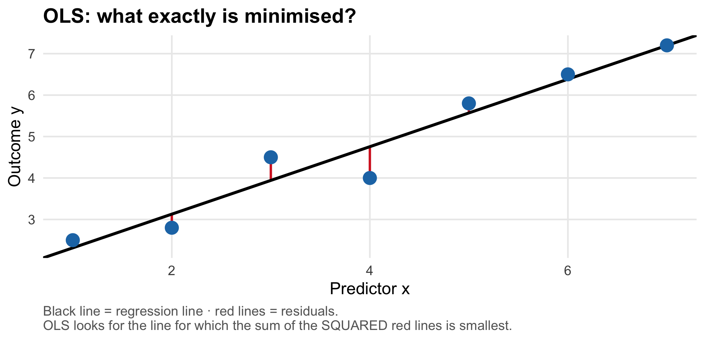
Interpretation. Each blue point pulls the line a little towards itself, like a rubber band. The line is the unique position in which the sum of the squared red lines is as small as possible. If you turned or shifted the line even slightly, this sum would immediately become larger.
The closed-form solution for the slope looks like this:
Read it as: “how strongly x and y vary together, relative to how strongly x varies on its own.” R calculates this in microseconds; the value in the column B of the output is exactly this number.
9.2.2 Fitting the model with linear_regression()
Question: How much of Islamophobia can be explained by populism alone?
Linear Regression: islamophobia ~ populism [Weighted]
R2 = 0.165, adj.R2 = 0.165, F(1, 1901) = 375.73, p < 0.001 ***, N = 1903
Use summary() for detailed output.
Interpretation of the compact output. Three numbers summarise the model:
R²: the share of the variance in Islamophobia that populism alone explains. With one explanatory variable, \(R^2 = r^2\), the square of the Pearson correlation from Chapter 7.
F (model): tests whether \(R^2\) differs significantly from 0.
N: how many cases entered the model.
summary() gives you the full table with intercept and slope:
Weighted Linear Regression Results
----------------------------------
- Formula: islamophobia ~ populism
- Method: ENTER (all predictors)
- N: 1903
- Weights: wghtpew
Descriptive Statistics
-----------------------------------------
Variable Mean Std. Deviation N
-----------------------------------------
islamophobia 3.961 1.458 1903
populism 3.307 0.772 1903
-----------------------------------------
Model Summary
----------------------------------
R 0.406
R Square 0.165
Adjusted R Square 0.165
Std. Error of the Estimate 1.333
----------------------------------
ANOVA
------------------------------------------------------------------
Source Sum of Squares df Mean Square F Sig.
------------------------------------------------------------------
Regression 667.449 1 667.449 375.727 <.001 ***
Residual 3376.621 1901 1.776
Total 4044.070 1902
------------------------------------------------------------------
Coefficients
-------------------------------------------------------------------------------------
Term B Std. Error Beta t Sig. 95% CI Lower 95% CI Upper
-------------------------------------------------------------------------------------
(Intercept) 1.423 0.134 10.589 <.001 1.160 1.687 ***
populism 0.767 0.040 0.406 19.384 <.001 0.690 0.845 ***
-------------------------------------------------------------------------------------
Collinearity Statistics
--------------------------
Term Tolerance VIF
--------------------------
populism 1.000 1.000
--------------------------
VIF > 10 (Tolerance < 0.1) indicates problematic collinearity.
Signif. codes: 0 '***' 0.001 '**' 0.01 '*' 0.05
The Coefficients table contains the two key numbers:
(Intercept): the value of Islamophobia that the model predicts when populism = 0. Mathematically, this is where the line crosses the y-axis.
populism: the slope, “by how much does Islamophobia change when populism increases by one unit?” This is exactly \(\hat{\beta}\) from the formula above.
9.2.3 Drawing the regression line by hand with coef() and geom_abline()
Unlike the quick-and-dirty geom_smooth(method = "lm"), we extract the coefficients directly from the model and draw the line with geom_abline(). This makes the link between model and visualisation visible:
intercept<-coef(m_simple)[["(Intercept)"]]slope<-coef(m_simple)[["populism"]]allbus|>filter(!is.na(islamophobia), !is.na(populism))|>ggplot(aes(x =populism, y =islamophobia))+geom_jitter(alpha =0.15, color ="#1f77b4", width =0.05, height =0.05)+geom_abline(intercept =intercept, slope =slope, color ="black", linewidth =1)+labs(x ="Populism (1–5, reverse-coded)", y ="Islamophobia (1–7)", title ="Simple regression: Islamophobia ~ populism", caption =sprintf("Line from the model: y = %.2f + %.2f · x · ALLBUS 2023, weighted",intercept, slope))
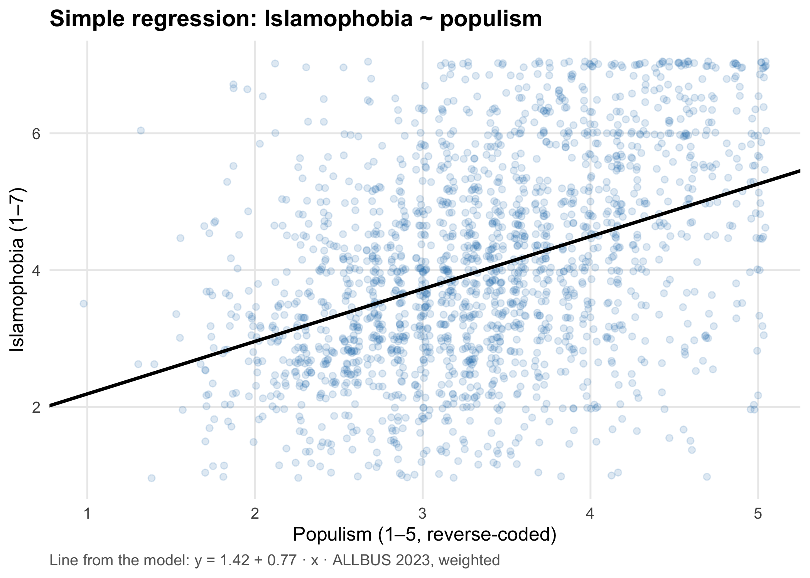
Interpretation. The black line is exactly the OLS solution of the lm model above, not a new fit by ggplot2. The slope in the plot equals the coefficient in the output table, and the point where the line crosses the y-axis equals the intercept. The caption gives you the equation of the line in one sentence: “Islamophobia = intercept + slope · populism.”
geom_smooth(method = "lm") also fits an lm model internally and draws its line, but the model itself stays invisible. In publications you will find both approaches, depending on the context.
9.3 Categorical predictors: dummy coding
The simple regression had a continuous predictor: populism on a 1–5 scale. As soon as you move on to multiple regression in the next section, categorical predictors also enter the model: education with three levels, region as East/West, sex as male/female/non-binary. Regression models, however, calculate with numbers. How does that work?
R solves this with a technique called dummy coding, and you need to understand it to read the output table correctly.
9.3.1 The idea: k levels become k − 1 dummies
For a factor with k levels, R internally creates k − 1 new 0/1 variables (the dummies). One original level becomes the reference category: it does not appear as a separate row in the output but is absorbed into the intercept.
For educ_cat with three levels, the internal coding looks like this:
Original value
educ_catmedium
educ_cathigh
low (reference)
0
0
medium
1
0
high
0
1
Figure 9.1 shows this for rows 1, 2 and 8 of allbus: the tower educ_cat becomes two 0/1 towers, and there is none for low.
Figure 9.1: From the factor educ_cat, R internally builds one 0/1 tower each for medium and for high. The first level, low, is the reference and gets no tower of its own.
Each respondent gets a pair of 0/1 values. “Low education” means that both dummies are 0: the person is the reference. The model then estimates two coefficients:
educ_catmedium = “difference between medium and low education”
educ_cathigh = “difference between high and low education”
The reference itself has no coefficient; by definition it would be 0. This matters for the interpretation: each dummy row in the output means “difference from the reference group”, not “absolute value”.
Stop and think. Which dummies does R create for sex with the levels MALE, FEMALE and NON-BINARY?
MALE is the first level and therefore the reference. R creates two dummies, sexFEMALE and sexNON-BINARY; exactly these two rows appear in the coefficient table in Section 9.4.
9.3.2 Which level becomes the reference? Changing it with fct_relevel()
R takes the first level of the factor. For educ_cat this is low (this is how the factor was defined in the setup: 1:2=1 [low]; 3=2 [medium]; 4:5=3 [high]). If you want a different basis for comparison, for example because you want to treat medium education as “normal” and “high/low” as deviations from it, change the order with fct_relevel():
The output would then show educ_catlow and educ_cathigh, both now compared with medium.
Important: R², the model F and all predictions stay the same. Only the interpretation of the individual coefficients shifts. So the choice of reference is a matter of interpretation.
Importantmariposa tip: The factors argument
Since version 0.6.2 you can control how linear_regression() and logistic_regression() treat factor predictors:
factors = "dummy" (default): as described above, k − 1 dummy contrasts. Consistent with base R lm().
factors = "numeric": the factor is converted into its integer codes (1, 2, 3, …) and treated as numeric; you get one slope instead of k − 1 contrasts. This reproduces SPSS REGRESSION with ordinally coded variables.
The choice between the two is an assumption about the level of measurement. Do you treat education as ordinal with equal distances (the step from level 2 to level 3 is the same as from level 1 to level 2 → numeric)? Or as purely categorical with unknown distances between the levels (dummy)? In this book we use the dummy default because it is methodologically more conservative: it does not impose the assumption of equal distances.
9.4 Multiple linear regression with linear_regression()
The simple regression had one predictor: populism. But Islamophobia probably does not depend only on populism. Education, age, region and sex also play a role, and they are related to each other. Multiple linear regression puts all of them into the model at the same time and shows what remains for each predictor when the others are controlled for. It is the most important method in quantitative social research.
Instead of a line in two dimensions, you now look for a plane (two predictors) or a higher-dimensional surface (more predictors) that fits the cloud of points. Each predictor gets its own coefficient, and this coefficient reads: “If this variable increases by one unit while all other variables are held constant, y changes by this value.” “Held constant” is the decisive point: this is how multiple regression isolates independent effects.
NoteBackground: What does “controlled for” mean?
Take a numerical example. You first calculate a bivariate regression (islamophobia ~ education) and get a coefficient of, say, −0.20: higher education → lower Islamophobia. Then you add populism to the model (islamophobia ~ education + populism), and the education coefficient shrinks to, say, −0.13.
As an arrow diagram:
indirect (−0.07)
┌─────► Populism ───────┐
│ ▼
Education ───┤ Islamophobia
│ ▲
└──── direct (−0.13) ───┘
Total effect of education: −0.20 = direct (−0.13) + indirect (−0.07)
The difference of −0.07 is the part of the education effect that actually runs through populism: people with higher education are on average less populist, and populism explains Islamophobia better than education alone. What remains after controlling for populism (−0.13) is the direct education effect, which is not mediated by populism. This breakdown into direct and mediated effects is what multivariate modelling adds.
Note: the numbers here are illustrative. The exact breakdown depends on the model specification (for example, on whether education enters as a continuous variable or as a dummy-coded categorical one, see Section 9.3). The principle of splitting the effect into a direct and an indirect part stays the same.
The most important number for the overall quality of the model is R²: the share of the variance in the dependent variable that the model explains. An R² of 0.30 means that your predictors explain 30% of the variation in the dependent variable; 70% remain unexplained (by variables that are not in your model, by measurement error, by chance). In social research, an R² above 0.30 is already a clear finding; near-perfect explanation with an R² close to 1 exists only in the natural sciences. Attitudes depend on very many influences, from personality and experience to social contexts, and no model can capture them all.
model<-allbus|>linear_regression( formula =islamophobia~educ_cat+age+eastwest+sex+populism, weights =wghtpew)model
Linear Regression: islamophobia ~ educ_cat + age + eastwest + sex + populism [Weighted]
R2 = 0.303, adj.R2 = 0.300, F(7, 1873) = 116.14, p < 0.001 ***, N = 1881
Use summary() for detailed output.
The compact output shows R², adjusted R², the F-test of the overall model and N. This is good for a quick overview: “Does the model fit at all?”summary() gives you the full SPSS-style table with all coefficients; you need it as soon as you look at individual predictors:
Weighted Linear Regression Results
----------------------------------
- Formula: islamophobia ~ educ_cat + age + eastwest + sex + populism
- Method: ENTER (all predictors)
- N: 1881
- Weights: wghtpew
- Note: labelled predictor age entered with its numeric codes, as SPSS REGRESSION does.
Use to_label() first to enter it as dummy-coded categories.
Descriptive Statistics
--------------------------------------------------------
Variable Mean Std. Deviation N
--------------------------------------------------------
islamophobia 3.968 1.456 1881
educ_catmedium 0.299 0.458 1881
educ_cathigh 0.480 0.500 1881
age 51.875 18.094 1881
eastwestNEW FEDERAL STATES 0.168 0.374 1881
sexFEMALE 0.487 0.500 1881
sexNON-BINARY 0.001 0.026 1881
populism 3.310 0.772 1881
--------------------------------------------------------
Model Summary
----------------------------------
R 0.550
R Square 0.303
Adjusted R Square 0.300
Std. Error of the Estimate 1.218
----------------------------------
ANOVA
------------------------------------------------------------------
Source Sum of Squares df Mean Square F Sig.
------------------------------------------------------------------
Regression 1206.947 7 172.421 116.138 <.001 ***
Residual 2780.714 1873 1.485
Total 3987.661 1880
------------------------------------------------------------------
Coefficients
------------------------------------------------------------------------------------------------------
Term B Std. Error Beta t Sig. 95% CI Lower 95% CI Upper
------------------------------------------------------------------------------------------------------
(Intercept) 0.808 0.195 4.149 <.001 0.426 1.190 ***
educ_catmedium 0.012 0.082 0.004 0.148 .882 -0.149 0.173
educ_cathigh -0.424 0.082 -0.145 -5.171 <.001 -0.584 -0.263 ***
age 0.024 0.002 0.298 14.493 <.001 0.021 0.027 ***
eastwestNEW FEDERAL STATES 0.339 0.077 0.087 4.401 <.001 0.188 0.490 ***
sexFEMALE 0.124 0.056 0.042 2.189 .029 0.013 0.234 *
sexNON-BINARY -0.854 1.091 -0.015 -0.783 .434 -2.993 1.286
populism 0.603 0.040 0.320 15.097 <.001 0.525 0.681 ***
------------------------------------------------------------------------------------------------------
Collinearity Statistics
--------------------------------------------
Term Tolerance VIF
--------------------------------------------
educ_catmedium 0.559 1.789
educ_cathigh 0.471 2.123
age 0.878 1.139
eastwestNEW FEDERAL STATES 0.949 1.053
sexFEMALE 0.991 1.009
sexNON-BINARY 0.997 1.003
populism 0.830 1.205
--------------------------------------------
VIF > 10 (Tolerance < 0.1) indicates problematic collinearity.
Signif. codes: 0 '***' 0.001 '**' 0.01 '*' 0.05
Interpretation. The Coefficients table is the core of the output:
B: unstandardised coefficients. For continuous predictors: “If x increases by one unit, y changes by B units.” For dummy variables (e.g. educ_cathigh): “difference from the reference group.”
Std. Error and t: the precision of the estimate.
Beta: standardised coefficients. They do not depend on the scale of the variables and can therefore be compared directly between predictors. They are the best guide to which predictor has the strongest relative effect.
Sig.: p-values.
95% CI Lower / Upper: the confidence interval for B (SPSS: /STATISTICS CI). If it excludes 0, the coefficient is significant at the 5% level.
Below it is the Collinearity Statistics table with tolerance and VIF for each predictor; more on this in Section 9.5. In the header at the top there is a note about age: because the variable still carries value labels from SPSS, it enters the model with its numeric values as a continuous predictor, as in SPSS REGRESSION. This is what we want for age. Only if you want to model a labelled variable as categories do you convert it to a factor with to_label() first.
Note also N = 1881: only cases with valid values on all variables enter the model (listwise deletion). Because islamophobia and populism come from different split modules (see Chapter 7), just over a third of the sample remains.
In our model, populism is the strongest predictor with a Beta of 0.32: people with more populist attitudes are also more Islamophobic.
For education, the dummy coding now shows something interesting that the old reading “education has a negative effect” had hidden. Medium education hardly differs from low education (educ_catmedium: Beta ≈ 0.00, p = .88, not significant). Only high education clearly lowers Islamophobia (educ_cathigh: Beta = −0.15, p < .001). So there is no even gradient across the three levels; the education effect comes from high education. This is an important substantive distinction, and only dummy coding makes it visible.
The other categorical predictors are read in the same way:
eastwestNEW FEDERAL STATES (Beta = 0.09, p < .001): respondents from the new federal states are more Islamophobic than respondents from the old federal states (= reference).
sexFEMALE (Beta = 0.04, p = .03): a weak positive effect for women compared with men (= reference).
sexNON-BINARY (Beta = −0.02, p = .43): not significant; but be careful, this is a very small group in the ALLBUS, and the estimate is unstable.
Continuous predictors keep the familiar interpretation: age (Beta = 0.30, p < .001) has a positive effect; older respondents have higher values.
The model explains a share of the variance in Islamophobia. How large is this share, and how large is the unexplained remainder? Here is the R² from the output, made visible:
library(broom)r2<-broom::glance(model)$r.squaredtibble( share =factor(c("explained by model (R²)", "unexplained (residuals)"), levels =c("unexplained (residuals)", "explained by model (R²)")), value =c(r2, 1-r2))|>ggplot(aes(x =value, y ="", fill =share))+geom_col(width =0.4)+geom_text(aes(label =sprintf("%.0f%%", value*100)), position =position_stack(vjust =0.5), color ="white", fontface ="bold", size =4.5)+scale_fill_manual(values =c(`explained by model (R²)` ="#1f77b4", `unexplained (residuals)` ="grey60"), name =NULL)+scale_x_continuous(labels =scales::percent, expand =c(0, 0))+labs(x =NULL, y =NULL, title =sprintf("How much variance does the model explain? R² = %.2f", r2), caption ="Typical for the social sciences: an R² of about 0.20–0.30 is a clear finding.")
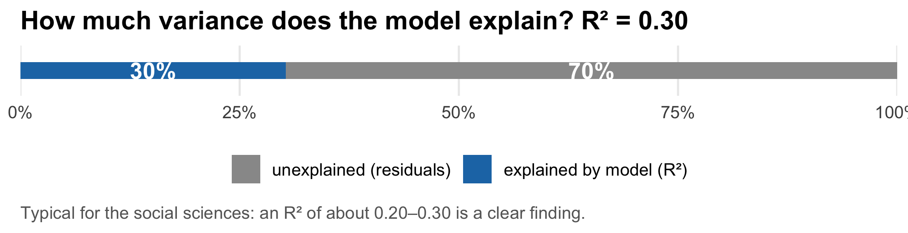
Interpretation. The blue share is the finding: “this much of the variation in Islamophobia can be explained by our five predictors.” The grey remainder is due to all variables that are not in the model, plus measurement error and chance.
NoteBackground: B or Beta?
The two coefficients answer different questions:
B (unstandardised) answers “by how many scale points does y change?” It can be interpreted in the original units of measurement: “One education level higher → 0.17 scale points less Islamophobia.” This is easy to grasp, but it cannot be compared between predictors measured on different scales.
Beta (standardised) answers “which predictor has the strongest relative effect?” All variables are brought to the same scale (mean 0, SD 1). Beta can be compared within one model, but not between models or samples (the standardisation depends on the sample SD).
Rule of thumb: use B for the substantive interpretation and Beta for ranking the predictors.
A complete regression table in a report contains B, SE, β, 95% CI, p-value, R², adjusted R², the model F, df and N. If someone asks about multicollinearity, you should have VIF and tolerance to hand; summary(model) gives you both in the table Collinearity Statistics. These values belong in the methods section or the appendix.
9.4.1 Comparing models with anova()
If you want to test whether an additional predictor improves the model significantly, you fit both models and compare them with anova().
mariposa’s linear_regression() returns an object that inherits directly from lm (class = c("linear_regression", "lm")). You do not need to extract anything: standard R functions such as anova(), predict(), coef(), confint() and vcov() work directly with the model:
# Both models must use the same set of cases, otherwise anova() refuses.allbus_model<-allbus|>drop_na(islamophobia, educ_cat, age, eastwest, sex, populism)m_base<-allbus_model|>linear_regression(islamophobia~educ_cat+age+eastwest+sex, weights =wghtpew)m_full<-allbus_model|>linear_regression(islamophobia~educ_cat+age+eastwest+sex+populism, weights =wghtpew)anova(m_base, m_full)# F-test of the incremental explained variance
Analysis of Variance Table
Model 1: islamophobia ~ educ_cat + age + eastwest + sex
Model 2: islamophobia ~ educ_cat + age + eastwest + sex + populism
Res.Df RSS Df Sum of Sq F Pr(>F)
1 1874 3119.1
2 1873 2780.7 1 338.37 227.91 < 2.2e-16 ***
---
Signif. codes: 0 '***' 0.001 '**' 0.01 '*' 0.05 '.' 0.1 ' ' 1
Figure 9.2 shows which rows drop_na() removes, using the first eight rows of allbus. 1881 rows remain, the N of the model above.
Figure 9.2: The first eight rows of allbus: grey rows are those in which at least one of the six model variables is missing; they are dropped. In row 5 only populism is missing: without the shared drop_na(), m_base would use this row and m_full would not.
Tip
SPSS → R: Hierarchical regression. In SPSS you click through several Block steps in Linear Regression and get the model comparison statistics for free. In R you fit each model separately and compare them explicitly. This takes more code, but every step is visible.
9.5 Checking multicollinearity: VIF
Imagine a jury in which two members always vote the same way. From their votes you can no longer tell who holds which opinion; the information is redundant. The same happens in a regression with two strongly correlated predictors: both contribute almost the same information, and the model can no longer separate their individual contributions. Coefficients become unstable, standard errors inflate and confidence intervals become wider. Your estimates become less precise, without this showing in the model R².
9.5.1 The formula is surprisingly simple
The VIF (variance inflation factor) puts a number on multicollinearity:
\[\text{VIF}_i = \frac{1}{1 - R^2_i}\]
where \(R^2_i\) comes from an auxiliary regression in which exactly this predictor \(x_i\) is predicted by all the others.
Read it as: “by what factor is the variance of this coefficient higher because the predictor is partly explained by the others?” Two examples:
\(R^2_i = 0\) (the predictor cannot be explained by any of the others) → VIF = \(1 / (1-0) = 1\): no inflation.
\(R^2_i = 0.9\) (90% of the predictor can be explained by the others) → VIF = \(1 / (1-0.9) = 10\): the standard error is \(\sqrt{10} \approx 3.2\) times larger than ideal.
The tolerance is the reciprocal: \(\text{Tolerance} = 1/\text{VIF} = 1 - R^2_i\).
9.5.2 Rules of thumb
VIF
Tolerance
Assessment
≈ 1
≈ 1
no multicollinearity
2 – 5
0.20 – 0.50
not critical
5 – 10
0.10 – 0.20
warning threshold: check
> 10
< 0.10
problematic: take action
9.5.3 Calculating the VIF by hand in three steps
mariposa gives you VIF and tolerance ready-made in summary(model). To see where this number comes from, you calculate the VIF once yourself, exactly according to the formula above, for one predictor in three visible steps. Example: the VIF for populism.
Step 1: auxiliary regression. We make populism the dependent variable and let all other predictors of the main model predict it. Important: this must be done on the same set of cases as the main model, so we use allbus_model from the model comparison above. With the full allbus, respondents without any value for Islamophobia would also enter, and the VIF would refer to a different sample from the model.
aux_model<-lm(populism~educ_cat+age+eastwest+sex, data =allbus_model, weights =wghtpew)
Step 2: read the R² of the auxiliary regression. How well do the other variables predict populism?
About 17% of the variance of populism can be explained by the other predictors.
Step 3: apply the VIF formula.
vif_populism<-1/(1-r2)vif_populism
[1] 1.205352
Result: VIF ≈ 1.21, far below the warning threshold of 5. So populism has no multicollinearity problem with the other predictors. To cross-check, look at the table Collinearity Statistics of summary(model) above: it shows exactly the same value for populism (VIF = 1.205, tolerance = 0.830). The calculation by hand and mariposa arrive at the same number because both apply the same definition to the same set of cases.
Importantmariposa tip: Collinearity without an extra package
summary() of a linear_regression() model contains VIF and tolerance for each predictor, the SPSS equivalent of /STATISTICS COLLIN. If you do not need the table, hide it with summary(model, collinearity = FALSE). As a tibble, the values are in the columns Tolerance and VIF of model$coef_table.
For the other predictors you repeat the same three steps, each with an adjusted auxiliary formula: age ~ populism + educ_cat + eastwest + sex for the VIF of age, eastwest ~ populism + educ_cat + age + sex for region, and so on. In Exercise 2 at the end of the chapter you work through this for another predictor.
NoteBackground: Categorical predictors and VIF
For a factor such as educ_cat (three levels → two dummy variables, see Section 9.3), each dummy variable gets its own VIF; this is also how summary(model) reports it (educ_catmedium 1.79, educ_cathigh 2.12). It is normal that the two education dummies have somewhat higher values: anyone who is not “medium” is very likely to be “high”. Specialised functions such as car::vif() (from the package car) calculate the generalised VIF (GVIF) for factors instead. This is a single statistic per original variable, and its column GVIF^(1/(2·Df)) can be compared directly with the VIF rules of thumb. For models like ours (all VIFs well below 2.5) the difference hardly matters; for models close to the warning threshold it is worth checking the GVIF.
9.6 Residual diagnostics by hand
A linear regression makes four key assumptions about what remains after fitting the model: the residuals (observed minus predicted y). With large samples the model is usually robust to violations of these assumptions, but every methods report should check them visually. The standard diagnostics consist of four plots. We build them by hand from the mariposa model with ggplot2 and combine them with patchwork.
9.6.1 Why not plot(model)?
Base R offers plot() for every lm object, and because mariposa models inherit from lm, plot(model) works directly: four diagnostic plots in one line. It is quick, but the plots look like 1995 and hardly fit the style of the book. With broom::augment() you instead extract the model residuals as a clean tibble; from then on it is ordinary ggplot2.
9.6.2 The four assumptions and their diagnostic plots
Plot
checks
what you want to see
Residuals vs Fitted
linearity
points scattered randomly around the zero line
Normal Q-Q
normality of the residuals
points lie on the diagonal
Scale-Location
homoscedasticity
constant spread across all fitted values
Residuals vs Leverage
outliers / leverage points
no isolated points with high leverage
9.6.3 Extracting the model residuals with augment()
For each observation, the tibble contains, among other things:
.fitted: the model prediction
.resid: the residuals (observed − predicted)
.std.resid: standardised residuals
.hat: leverage (how unusual a case’s predictor values are)
.cooksd: Cook’s distance (the overall influence of a case)
Figure 9.3 shows the first two rows of diag_df; they are the respondents from rows 1 and 6 of Figure 9.2. augment() places the new columns next to the model data: .fitted is the calculation with the coefficients B from summary(model), and .resid is the observed value minus this prediction.
Figure 9.3: The first two rows of diag_df, rounded to three decimal places; eastwest and sex as well as .sigma, .cooksd and .std.resid are not shown. In row 1 the dummies of eastwest and sex are all 0: the respondent is a man from the old federal states, and both are reference levels.
9.6.4 Building the four plots
p_rf<-diag_df|>ggplot(aes(x =.fitted, y =.resid))+geom_point(alpha =0.2, color ="#1f77b4")+geom_hline(yintercept =0, linetype ="dashed", color ="grey50")+geom_smooth(method ="loess", color ="black", se =FALSE, linewidth =0.7)+labs(x ="Fitted values", y ="Residuals", title ="Residuals vs Fitted", subtitle ="Linearity")p_qq<-diag_df|>ggplot(aes(sample =.std.resid))+geom_qq(alpha =0.2, color ="#1f77b4")+geom_qq_line(color ="black")+labs(x ="Theoretical quantiles (normal distribution)", y ="Standardised residuals", title ="Normal Q-Q", subtitle ="Distribution of the residuals")p_sl<-diag_df|>ggplot(aes(x =.fitted, y =sqrt(abs(.std.resid))))+geom_point(alpha =0.2, color ="#1f77b4")+geom_smooth(method ="loess", color ="black", se =FALSE, linewidth =0.7)+labs(x ="Fitted values", y =expression(sqrt("|Standardised residuals|")), title ="Scale-Location", subtitle ="Homoscedasticity")p_rl<-diag_df|>ggplot(aes(x =.hat, y =.std.resid))+geom_point(alpha =0.2, color ="#1f77b4")+geom_hline(yintercept =0, linetype ="dashed", color ="grey50")+geom_smooth(method ="loess", color ="black", se =FALSE, linewidth =0.7)+labs(x ="Leverage", y ="Standardised residuals", title ="Residuals vs Leverage", subtitle ="Outliers / leverage points")(p_rf+p_qq)/(p_sl+p_rl)
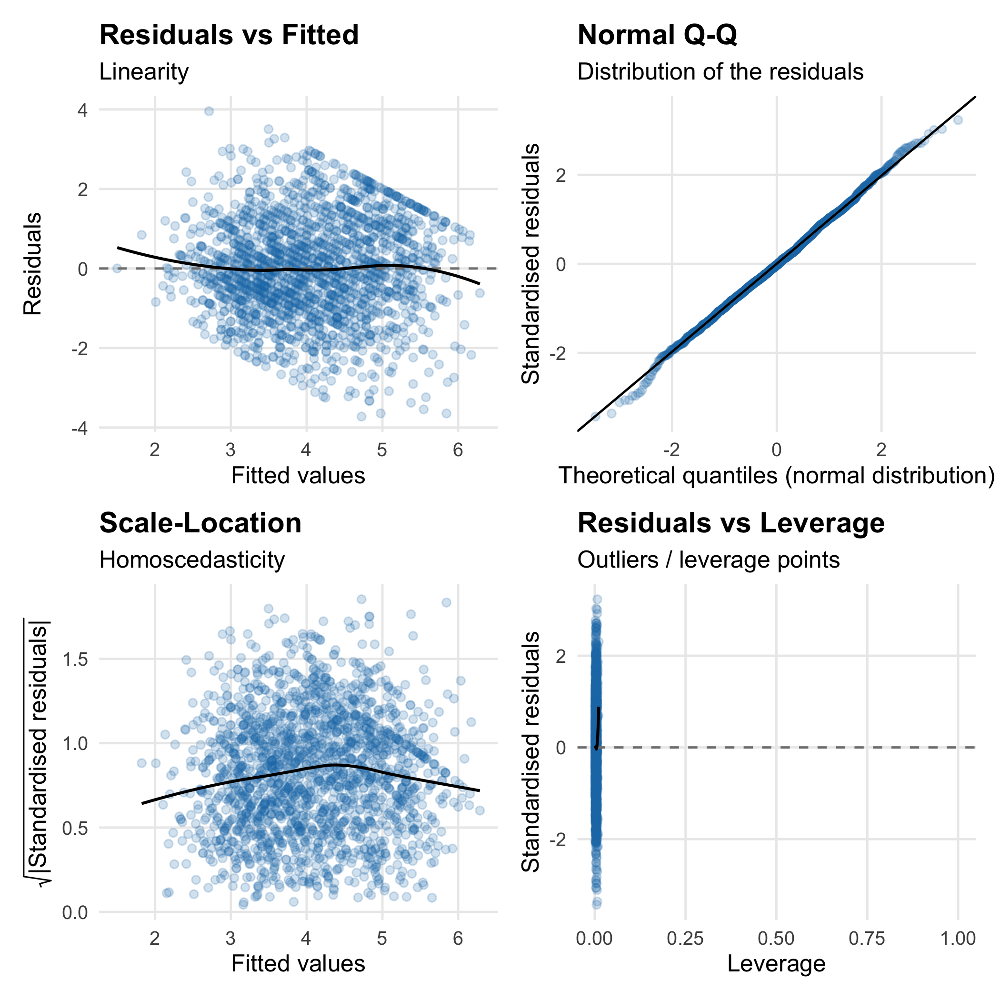
Interpretation. With N ≈ 1900 (as here), visible deviations are the exception; the LOESS lines should run largely flat around 0 (or horizontally in the Scale-Location plot). If the Q-Q plot deviates clearly from the diagonal at the ends, the assumption of normally distributed residuals is violated. With large samples this is usually unproblematic thanks to the central limit theorem. To check individual points with high leverage, use diag_df |> filter(.cooksd > 4/n()); Cook’s distance values above 1 clearly call for a closer look.
Importantmariposa tip: What works directly with model?
mariposa models behave like ordinary lm objects, so all standard tools dispatch directly:
base R: anova(model), predict(model), coef(model), confint(model), residuals(model), plot(model)
model$anova_table# tibble: SPSS-style ANOVA of the model
# A tibble: 3 × 6
Source Sum_of_Squares df Mean_Square F_statistic Sig
<chr> <dbl> <dbl> <dbl> <dbl> <dbl>
1 Regression 1207. 7 172. 116. 9.85e-142
2 Residual 2781. 1873. 1.48 NA NA
3 Total 3988. 1880. NA NA NA
The slots contain the same values that summary(model)prints, in a form you can use in code. With knitr::kable(model$coef_table) you build the regression table for your term paper without typing anything by hand. Prefer Excel? write_xlsx(model, "regression.xlsx") writes the result tables of the model to an Excel file. Since mariposa 0.7.4 this works for every analysis result, and cross-tabulations are written in the SPSS layout.
9.7 ANOVA with several factors
The one-way ANOVA from Chapter 7 tests one grouping factor. In practice you often want to test several factors at the same time and, above all, whether a factor has a different effect in different subgroups (interaction). Methodologically, ANOVA is a special case of regression with categorical predictors. The logic is the same as in Section 9.4; only the presentation is more compact and tailored to comparisons of group means.
9.7.1 Two-way ANOVA with factorial_anova()
Question: Is the education effect on Islamophobia the same in East and West, or does it differ?
allbus|>factorial_anova(islamophobia, between =c(educ_cat, eastwest), weights =wghtpew)
Factorial ANOVA (2-Way): islamophobia by educ_cat, eastwest [Weighted], N = 3274
educ_cat: F(2, 3268) = 136.964, p < 0.001 ***, eta2p = 0.077
eastwest: F(1, 3268) = 74.259, p < 0.001 ***, eta2p = 0.022
educ_cat:eastwest: F(2, 3268) = 1.686, p = 0.185, eta2p = 0.001
Use summary() for detailed output.
Interpretation. You get three F-tests: one for each main effect (education, region) and one for the interaction (education × region), each with the partial η² (eta2p), the share of variance that the effect explains when the other effects are partialled out. A significant interaction means that the education effect on Islamophobia differs between East and West. This is also called a moderating relationship: region moderates the education effect. If the interaction is not significant, the two effects are additive: each works in a similar way in both regions.
Here both main effects are highly significant, education with a partial η² of .077 and region with .022. The interaction, by contrast, is not significant with F(2, 3268) = 1.69, p = .19 and a partial η² of .001: the education effect is similar in East and West. summary() gives you the full SPSS table Tests of Between-Subjects Effects with sums of squares, weighted cell means and Levene’s test.
An interaction is easiest to understand visually. Imagine two line charts with education on the x-axis, Islamophobia on the y-axis and one line per region:
Parallel lines → no interaction effect. The education effect is equally strong in East and West; the lines are only at different heights (main effect of region).
Non-parallel lines (crossing or with different slopes) → interaction effect. The education effect is stronger or weaker in the East than in the West.
If you want to communicate a finding after a significant interaction, such a line chart (factor 1 on x, factor 2 as colour or line type) is the established format.
9.7.2 Making the interaction visible
You calculate this plot for the ANOVA model above yourself, with the tools from Chapters 5 and 6:
allbus|>filter(!is.na(islamophobia), !is.na(educ_cat), !is.na(eastwest))|>summarise( m =w_mean(islamophobia, weights =wghtpew), se =w_se(islamophobia, weights =wghtpew), .by =c(educ_cat, eastwest))|>ggplot(aes(x =educ_cat, y =m, color =eastwest, group =eastwest))+geom_line(linewidth =1)+geom_pointrange(aes(ymin =m-1.96*se, ymax =m+1.96*se), linewidth =0.7)+labs(x ="Education group", y ="Islamophobia (mean)", color ="Region", title ="Interaction: education × region", caption ="ALLBUS 2023, weighted with wghtpew (95% CI)")
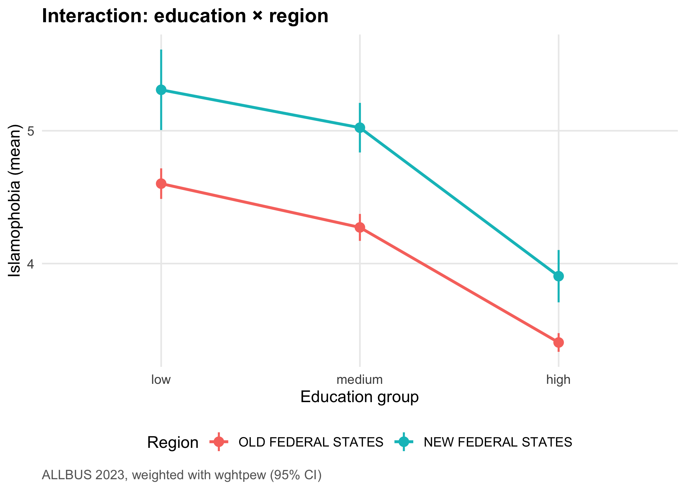
Interpretation. The lines for East and West run almost parallel. The East is higher at all three education levels (main effect of region), and in both regions Islamophobia drops markedly, above all from medium to high education (main effect of education). Between “medium” and “high” the line for the East falls slightly more steeply, but this small deviation from parallel is within the range of chance: the interaction term of the ANOVA above is not significant (p = .19). So region and education act additively.
Lines from sample data are never exactly parallel. The interaction term only becomes significant when the deviation is larger than chance can plausibly explain, and the F-test makes exactly this judgement for you. The plot and the test therefore belong together: the plot shows you what a possible difference looks like, and the test shows whether it holds up.
9.7.3 ANCOVA with ancova()
Analysis of covariance combines ANOVA and regression. You have a categorical grouping factor (e.g. education) and a continuous covariate (e.g. age). ANCOVA tests the group difference after the influence of the covariate has been removed.
Question: Do education groups differ in Islamophobia when age is held constant?
allbus|>ancova(islamophobia, between =educ_cat, covariate =age, weights =wghtpew)
ANCOVA: islamophobia by educ_cat, covariate: age [Weighted], N = 3268
age (covariate): F(1, 3264) = 275.550, p < 0.001 ***, eta2p = 0.078
educ_cat: F(2, 3264) = 136.643, p < 0.001 ***, eta2p = 0.077
Use summary() for detailed output.
Interpretation. The group effect of education is reported adjusted for the age effect. Both are highly significant, and each explains a similar share of variance (partial η² just under .08 each). ANCOVA is useful when a known confounder varies between the groups and you want to isolate its influence. It links pure ANOVA (categorical predictors) and regression (continuous predictors).
You can see how much the adjustment changes the picture in the estimated marginal means from summary(): the group means that would result if all groups had the same average age.
allbus|>ancova(islamophobia, between =educ_cat, covariate =age, weights =wghtpew)|>summary()
Weighted ANCOVA (One-Way ANCOVA) Results
----------------------------------------
- Dependent variable: islamophobia
- Factor(s): educ_cat
- Covariate(s): age
- Sum of squares: Type III
- Weights variable: wghtpew
- N (complete cases): 3268
- Missing: 1978
Tests of Between-Subjects Effects
------------------------------------------------------------------------------------------------------
Source Type III Sum of Squares df Mean Square F Sig Partial Eta Squared
------------------------------------------------------------------------------------------------------
Corrected Model 1448.178 3 482.726 260.996 <.001 0.193 ***
Intercept 2428.440 1 2428.440 1312.985 <.001 0.287 ***
age 509.645 1 509.645 275.550 <.001 0.078 ***
educ_cat 505.458 2 252.729 136.643 <.001 0.077 ***
Error 6036.953 3264 1.850
Total 60031.393 3268
Corrected Total 7485.132 3267
------------------------------------------------------------------------------------------------------
R Squared = 0.193 (Adjusted R Squared = 0.193)
Parameter Estimates
----------------------------------------------------------------------------------------------------
Parameter B Std. Error t Sig 95% CI Lower 95% CI Upper Partial Eta Squared
----------------------------------------------------------------------------------------------------
Intercept 2.382 0.074 32.091 <.001 2.237 2.528 0.240
age 0.023 0.001 16.600 <.001 0.021 0.026 0.078
[educ_cat=low] 0.813 0.067 12.184 <.001 0.682 0.944 0.044
[educ_cat=medium] 0.826 0.056 14.796 <.001 0.716 0.935 0.063
[educ_cat=high] 0 (a)
----------------------------------------------------------------------------------------------------
(a) This parameter is set to zero because it is redundant (SPSS coding: the
last category of each factor is the reference).
Estimated Marginal Means
(Evaluated at covariate means)
-------------------------------------------------------
educ_cat Mean Std. Error 95% CI Lower 95% CI Upper
-------------------------------------------------------
low 4.414 0.055 4.306 4.522
medium 4.426 0.044 4.341 4.512
high 3.601 0.034 3.533 3.668
-------------------------------------------------------
Levene's Test of Equality of Error Variances
F(2, 3265) = 5.970, p = 0.003 **
Signif. codes: 0 '***' 0.001 '**' 0.01 '*' 0.05
Interpretation. In the simple ANOVA (Chapter 7), the low-education group was still just over 0.2 scale points above the medium group (4.68 versus 4.45). At equal age this difference almost disappears (4.41 versus 4.43); only high education stays clearly lower at 3.60. So part of the apparent education effect was an age effect: respondents with a low school-leaving certificate are older on average, and older people are more Islamophobic. This matches the educ_catmedium coefficient of the multiple regression above.
Figure 9.4 puts both sets of means on the same scale: low moves from 4.68 to 4.41 and is then almost level with medium, while high rises from 3.48 to 3.60.
Figure 9.4: Means of islamophobia per education group: at the top from oneway_anova() (Chapter 7), at the bottom the marginal means from ancova() at equal age. The dashed lines connect the same group.
Warning
Caution: A different reference category from the regression. In the table Parameter Estimates, ancova(), like SPSS UNIANOVA, uses the last category as the reference (here “high”, marked “0 (a)”). linear_regression(), like lm(), uses the first category (“low”). You therefore cannot compare the coefficients of the two functions directly; the marginal means do not depend on the choice of reference.
9.8 Logistic regression with logistic_regression()
Linear regression is only suitable for interval-scaled dependent variables, that is, quantities with an ordered, continuous range of values. What do you do if your outcome has only two values? For example “votes Green / does not vote Green”, “has a university degree / does not have one”, “has high Islamophobia / has low Islamophobia”?
Here linear regression fails. It might predict that a person votes Green with a probability of 1.3, which obviously makes no sense (probabilities lie between 0 and 1). The solution is logistic regression. Instead of the value of the dependent variable itself, it models the probability that the event occurs, and a clever transformation (the logistic function) makes sure that the predictions always stay between 0 and 1.
The coefficients can be interpreted as odds ratios: the factor by which the odds (the ratio of occurrence to non-occurrence) change when the predictor increases by one unit.
Three related quantities appear in logistic regression:
Probability (p): the familiar quantity between 0 and 1. “p = 0.25 → 25% probability.”
Odds = p / (1 − p): the ratio of occurrence to non-occurrence. “p = 0.25 → odds = 0.25 / 0.75 = 1/3.” This reads as “the odds are 1 to 3”.
Logit = log(odds): the logarithm of the odds. It ranges from −∞ to +∞ and makes it possible to model the dependent variable linearly with predictors.
Logistic regression estimates the coefficients in logit space: a predictor that is one unit higher changes the logit linearly. To make this interpretable, mariposa transforms the coefficients into odds ratios (= exp(logit coefficient)). An odds ratio > 1 means: higher values of the predictor → higher probability. An odds ratio < 1 means: higher values → lower probability.
Why the logit transformation is the central trick of logistic regression is easiest to see in a plot. The function that translates the logit back into a probability is an S-curve (sigmoid):
tibble( logit =seq(-6, 6, length.out =200), probability =exp(logit)/(1+exp(logit)))|>ggplot(aes(x =logit, y =probability))+geom_line(color ="#1f77b4", linewidth =1.2)+geom_hline(yintercept =c(0, 1), linetype ="dashed", color ="grey60")+geom_hline(yintercept =0.5, linetype ="dotted", color ="grey40")+geom_vline(xintercept =0, linetype ="dotted", color ="grey40")+labs(x ="Logit (modelled linearly by the predictors)", y ="Probability p", title ="From logit to probability: the sigmoid curve")
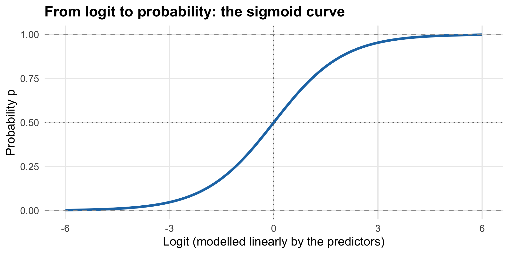
Interpretation. In logit space (x-axis), any value is possible, from −∞ to +∞. The sigmoid function always squeezes the result (y-axis) between 0 and 1. At logit = 0, p = 0.5 (where the dotted reference lines cross). Logit = +2 corresponds to p ≈ 0.88, logit = −2 to p ≈ 0.12. At the ends the curve flattens out: the same increase in the logit changes the probability by different amounts, depending on where you start on the curve. This is why interpreting odds ratios (see below) requires care.
For our mini study we construct a dummy variable: “high Islamophobia” (scale value ≥ 4).
Warning
Caution: Dichotomising continuous variables. Shrinking a 1–7 scale to 0/1 is a methodological decision; nothing technical requires it. You lose information (loss of power), and the choice of threshold (median? a cut-off based on theory?) is always open to criticism. Dichotomise only if the research question suggests it (“who falls into the upper half?”), and not because a logistic regression seems simpler. A linear regression on the original scale is usually the methodologically cleaner choice.
Question: Which characteristics distinguish respondents with high Islamophobia from the others?
allbus_dummy<-allbus|>mutate(islamophobia_high =as.integer(islamophobia>=4))model_log<-allbus_dummy|>logistic_regression( formula =islamophobia_high~educ_cat+age+eastwest+sex, weights =wghtpew)model_log
Logistic Regression: islamophobia_high ~ educ_cat + age + eastwest + sex [P(islamophobia_high = 1)] [Weighted]
Nagelkerke R2 = 0.206, chi2(6) = 549.01, p < 0.001 ***, Accuracy = 68.4%, N = 3265
Use summary() for detailed output.
Interpretation. The compact output shows:
[P(islamophobia_high = 1)] in the title: which probability is modelled, namely that of the value 1, i.e. high Islamophobia.
Nagelkerke R²: a pseudo-R², roughly comparable with the R² of a linear regression.
χ² of the model: the likelihood ratio test against the null model.
Accuracy: the share of correctly classified cases.
NoteBackground: Accuracy is only one classification measure
Accuracy = (true positives + true negatives) / total. But it does not tell you where the model fails. With unbalanced classes (e.g. 90% “low”, 10% “high”), a model that predicts every case as “low” already reaches an accuracy of 90% without recognising a single “high” case. Two complementary measures are:
Sensitivity (recall): the share of actual “high” cases that are correctly recognised.
Specificity: the share of actual “low” cases that are correctly recognised.
Both are already in the Classification Table of summary(): the column % Correct in row 1 is the sensitivity (here 67.4%), and in row 0 it is the specificity (69.3%). So our model recognises both groups about equally well.
You again get the full table with coefficients, odds ratios and confidence intervals with summary():
Weighted Logistic Regression Results
------------------------------------
- Formula: islamophobia_high ~ educ_cat + age + eastwest + sex
- Method: ENTER
- N: 3265
- Weights: wghtpew
- Note: labelled predictor age entered with its numeric codes, as SPSS LOGISTIC REGRESSION does.
Use to_label() first to enter it as dummy-coded categories.
Dependent Variable Encoding
------------------------------
Original Value Internal Value
------------------------------
0 0
1 1
------------------------------
Omnibus Tests of Model Coefficients
---------------------------------
Chi-square df Sig.
---------------------------------
Model 549.013 6 <.001 ***
---------------------------------
Model Summary
-------------------------------
-2 Log Likelihood 3977.854
Cox & Snell R Square 0.155
Nagelkerke R Square 0.206
McFadden R Square 0.121
-------------------------------
Hosmer and Lemeshow Test
-----------------------
Chi-square df Sig.
-----------------------
10.796 8 .214
-----------------------
Classification Table (cutoff = 0.50; rows: observed, columns: predicted)
-----------------------------------------
Observed 0 1 % Correct
-----------------------------------------
0 1132 502 69.3
1 532 1100 67.4
Overall Percentage 68.4
-----------------------------------------
Variables in the Equation
------------------------------------------------------------------------------------------------------
Term B S.E. Wald df Sig. Exp(B) 95% CI Lower 95% CI Upper
------------------------------------------------------------------------------------------------------
(Intercept) -1.065 0.168 40.373 1 <.001 0.345 ***
educ_catmedium -0.020 0.114 0.031 1 .861 0.980 0.785 1.225
educ_cathigh -1.110 0.105 110.637 1 <.001 0.330 0.268 0.405 ***
age 0.028 0.002 148.165 1 <.001 1.028 1.024 1.033 ***
eastwestNEW FEDERAL STATES 0.636 0.105 36.806 1 <.001 1.888 1.538 2.318 ***
sexFEMALE 0.131 0.077 2.937 1 .087 1.140 0.981 1.325
sexNON-BINARY -1.621 1.454 1.242 1 .265 0.198 0.011 3.420
------------------------------------------------------------------------------------------------------
Signif. codes: 0 '***' 0.001 '**' 0.01 '*' 0.05
Interpretation. The table Variables in the Equation is the core of the output; the odds ratios are in the column Exp(B). Odds ratios > 1 increase the odds of the outcome, odds ratios < 1 decrease them. Compared with low education, high education reduces the odds of high Islamophobia to about a third (OR = 0.33). Respondents from the new federal states have almost twice the odds (OR = 1.89), and each year of age increases the odds by just under 3% (OR = 1.028). As in the linear regression, medium and low education do not differ (p = .86). At the very top, Dependent Variable Encoding documents how the dependent variable is coded internally. This matters if your outcome is not coded 0/1: logistic_regression() accepts any variable with exactly two values (such as 1/2 codes, labelled, factor or logical) and, like SPSS, models the probability of the higher value (for factors the second level, for logical variables TRUE).
Warning
Caution: An odds ratio is not a probability factor. A common misunderstanding is that an OR of 2 doubles the probability. It does not. A concrete example with a 2 × 2 table shows why:
Outcome = 1
Outcome = 0
Total
Probability
Men
25
75
100
25/100 = 0.25
Women
40
60
100
40/100 = 0.40
Odds for men = 25/75 = 1/3
Odds for women = 40/60 = 2/3
Odds ratio (women vs. men) = (2/3) / (1/3) = 2.0
The OR of 2.0 says: “Women have twice the odds.” But the probability only rises from 0.25 to 0.40, that is by 60%, not by 100%. For small probabilities (≤ 0.10), OR ≈ probability factor; for large ones the discrepancy becomes noticeable.
If you show the same 2×2 table as stacked bars, you see the probabilities directly:
tibble( group =factor(rep(c("men", "women"), each =2), levels =c("men", "women")), outcome =factor(rep(c("Outcome = 1", "Outcome = 0"), 2), levels =c("Outcome = 0", "Outcome = 1")), n =c(25, 75, 40, 60))|>ggplot(aes(x =group, y =n, fill =outcome))+geom_col(position ="fill", width =0.4)+geom_text(aes(label =sprintf("%d (%.0f%%)", n, n)), position =position_fill(vjust =0.5), color ="white", fontface ="bold")+scale_fill_manual(values =c(`Outcome = 1` ="#d62728", `Outcome = 0` ="grey60"), name =NULL)+scale_y_continuous(labels =scales::percent)+coord_flip()+labs(x =NULL, y ="Share", title ="OR = 2.0 in pictures: the probability rises from 25% to 40%", caption ="Increase in probability = 15 percentage points (= 60% relative), not 100%.")
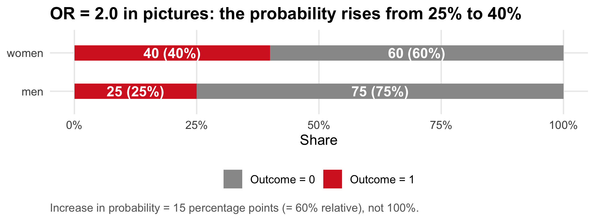
Interpretation. The red share is the probability, and it rises from 25% for men to 40% for women. This is an increase in probability of 60%, although the odds double. If you want to say in your discussion that “factor X increases the probability by Y percentage points”, calculate concrete probabilities rather than paraphrasing ORs: with predict(model, type = "response") or, for the average effect of each predictor, with marginal_effects() (see below).
9.8.1 Translating odds ratios into probabilities: marginal_effects()
Odds ratios are hard to communicate (see the Caution box above). If you want to say by how many percentage points the probability changes, you need average marginal effects (AME). An AME is the average change in the predicted probability: for a factor compared with the reference category, for a continuous variable per unit. In Stata this is margins, dydx(*); mariposa calculates it directly from the model with marginal_effects():
model_log|>marginal_effects()
Average Marginal Effects: islamophobia_high ~ educ_cat + age + eastwest + sex [Weighted]
educ_cat: medium vs. low: AME = -0.004, p = 0.861
educ_cat: high vs. low: AME = -0.252, p < 0.001 ***
age: AME = 0.006, p < 0.001 ***
eastwest: NEW FEDERAL STATES vs. OLD FEDERAL STATES: AME = 0.134, p < 0.001 ***
sex: FEMALE vs. MALE: AME = 0.028, p = 0.086
sex: NON-BINARY vs. MALE: AME = -0.297, p = 0.139
AME = average change in predicted probability. Use summary() for detailed output.
Interpretation. Now the numbers are on the probability scale:
High vs. low education: −0.25. High education lowers the probability of high Islamophobia by 25 percentage points on average.
New vs. old federal states: +0.13. In the East the probability is 13 percentage points higher.
Age: +0.006 per year. Ten years of age therefore add about 6 percentage points.
Figure 9.5 shows how marginal_effects() arrives at −0.252. For each person in the model, R predicts the probability twice, once with low and once with high education; age, region and sex stay as they are. The weighted mean of these differences is the AME.
Figure 9.5: The first three people in the model: educ_cat is set once to low and once to high for each of them, and predict() calculates the probabilities with type = "response". The mean of the differences is taken over all people in the model, weighted with wghtpew. The differences are rounded to two decimal places.
You can write exactly these sentences in a term paper without misinterpretation. Statements about odds (“high education reduces the odds to a third”) are different: many readers instinctively read them as probabilities. summary() shows standard errors, z values and confidence intervals of the AMEs (via the delta method). For a linear model you do not need marginal_effects(): there, the coefficient B already is the marginal effect.
9.8.2 The sigmoid curve with real data
Here is the abstract sigmoid curve from above, now with data. We plot the probability of islamophobia_high = 1 as a function of populism. The 0/1 points (made visible with jitter) are real respondents; the black curve is a logistic regression with populism as the only predictor:
allbus_dummy|>filter(!is.na(populism), !is.na(islamophobia_high))|>ggplot(aes(x =populism, y =islamophobia_high))+geom_jitter(alpha =0.08, color ="#1f77b4", width =0.05, height =0.06)+geom_smooth(method ="glm", method.args =list(family ="binomial"), color ="black", linewidth =1.2, se =FALSE)+scale_y_continuous(breaks =c(0, 0.25, 0.5, 0.75, 1), labels =scales::percent)+labs(x ="Populism (1–5, reverse-coded)", y ="Probability (Islamophobia ≥ 4)", title ="The sigmoid curve with real data", caption ="Points (jittered) = individual respondents (top = islamophobia_high = 1) · curve = logistic regression")
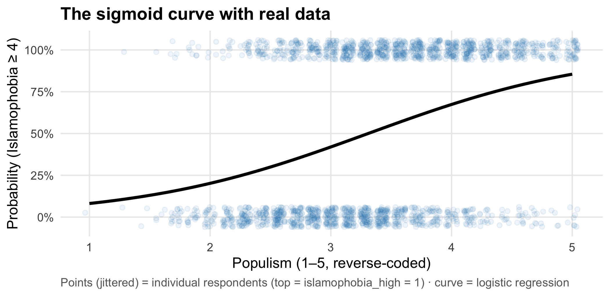
Interpretation. At low populism (left), the probability of high Islamophobia is below 30%. At high populism (right) it rises to over 80%. The shape (flat, then steep, then flat again) is exactly the sigmoid curve from the abstract plot above, now filled with real ALLBUS data. This is what logistic regression models.
9.9 Communicating findings graphically
The models are fitted and the coefficients interpreted; what remains is communicating the results. In a term paper, an article or a presentation, a regression table is the standard; a plot makes the result readable at a glance.
9.9.1 Coefficient plots: visualising regression results with tidy()
The most effective format is a coefficient plot: a point for the estimate, a line for the confidence interval and a vertical zero line as a reference. Coefficient plots have become standard in empirical political science and social science (see Gelman & Hill 2007; King et al. 2000). They do not replace the full table in the appendix, but they also make the result accessible to readers without statistical training. This is the plot for our main model, taken directly from the lm object via broom::tidy():
library(broom)model|>tidy(conf.int =TRUE)|>filter(term!="(Intercept)")|># the constant is not of interest hereggplot(aes(x =estimate, y =fct_reorder(term, estimate), xmin =conf.low, xmax =conf.high))+geom_pointrange()+geom_vline(xintercept =0, linetype ="dashed", color ="grey50")+labs(x ="Coefficient with 95% CI", y =NULL, title ="What explains Islamophobia in Germany in 2023?", caption ="Multiple linear regression · ALLBUS 2023, weighted\nValues from broom::tidy(model)")
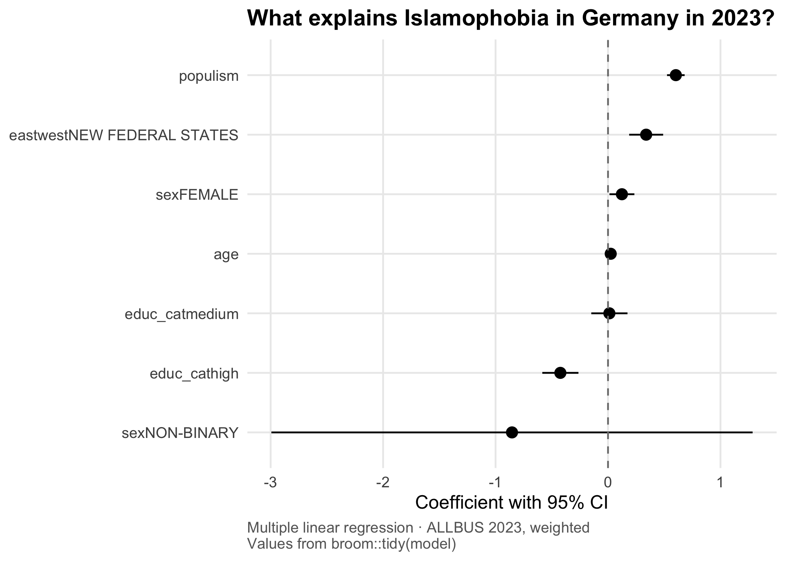
Interpretation. At a glance you see how strong the effect of each predictor is: populism has the largest positive effect, education the largest negative one. Confidence intervals that cross the dashed zero line are statistically uncertain: the effect does not differ clearly from 0.
tidy() takes the lm object and puts the coefficients table into an ordinary tibble with the columns term, estimate, std.error, statistic and p.value, plus conf.low/conf.high with conf.int = TRUE. This makes every model output ready for ggplot2 without you typing in any values. broom belongs to the tidymodels family and is the de facto standard link between statistical models and tidyverse workflows.
9.9.2 Combining several plots with patchwork: +, / and |
patchwork is the modern replacement for gridExtra::grid.arrange(). You save plots as objects and combine them with +, / and |:
p1<-allbus|>filter(!is.na(islamophobia))|>ggplot(aes(x =islamophobia, weight =wghtpew))+geom_histogram(binwidth =0.5, fill ="#2563eb", color ="white")+labs(title ="Distribution", x ="Islamophobia", y ="Frequency")p2<-allbus|>filter(!is.na(islamophobia), !is.na(eastwest))|>ggplot(aes(x =eastwest, y =islamophobia, fill =eastwest))+geom_boxplot(alpha =0.7)+labs(title ="East vs. West", x =NULL, y ="Islamophobia")+theme(legend.position ="none")p3<-allbus|>filter(!is.na(islamophobia), !is.na(populism))|>ggplot(aes(x =populism, y =islamophobia))+geom_jitter(alpha =0.2, color ="#1f77b4", width =0.05, height =0.05)+geom_abline(intercept =intercept, slope =slope, color ="black", linewidth =1)+labs(title ="With populism", x ="Populism", y =NULL)(p1|p2)/p3
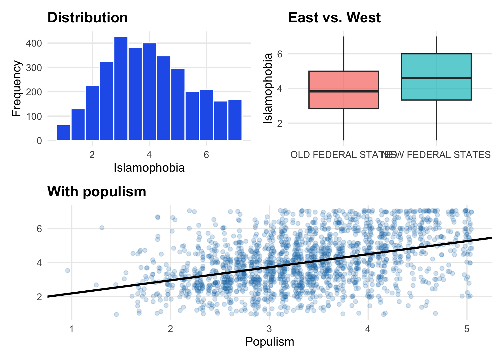
p1 | p2 places plots side by side, / places them one below the other. Brackets group them, much as in an arithmetic expression. The tasks are divided: mariposa provides the statistical results (coefficients, χ², r, F), ggplot2 draws the individual plots, and patchwork arranges them.
9.9.3 Saving plots with ggsave()
ggsave() exports the last plot (or a named object) in any format:
In practice: PDF for LaTeX reports (filename = "....pdf"), PNG with dpi ≥ 300 for Word and slides, SVG for the web (scalable).
Exercises
NoteExercise 1 · Model with interaction · Reproduction
Extend the main model with an interaction term between education and populism. Is the education effect stronger or weaker depending on the level of populism?
TipSolution
allbus|>linear_regression( formula =islamophobia~educ_cat*populism+age+eastwest+sex, weights =wghtpew)|>summary()
Calculate the VIF for the predictor age by hand, following the three-step pattern from Section 9.5 (auxiliary regression → R² → 1 / (1 − R²)). Is the VIF below the warning threshold of 5, and does it match the value in summary(model)? And what would the auxiliary formula for the VIF of eastwest look like? You do not need to calculate it, just write it down.
TipSolution
# Step 1: auxiliary regression (explain age by all other predictors)# (on the same set of cases as the main model: allbus_model)aux_age<-lm(age~populism+educ_cat+eastwest+sex, data =allbus_model, weights =wghtpew)# Step 2: read the R²r2_age<-summary(aux_age)$r.squared# Step 3: VIF formula; gives about 1.14, as in summary(model)1/(1-r2_age)# Auxiliary formula for the VIF of eastwest (not calculated):# eastwest ~ populism + educ_cat + age + sex# (to calculate it, use eastwest as a 0/1 dummy, because lm() does not take a factor as the DV)
NoteExercise 3 · Logistic regression with a dichotomous outcome · Transfer
Create a dummy variable for “high satisfaction with democracy” (ps03 ≤ 2, because low values mean satisfaction here) and test which characteristics are related to it.
TipSolution
allbus|>mutate(demo_satisfied =as.integer(ps03<=2))|>logistic_regression( formula =demo_satisfied~educ_cat+age+eastwest+sex+islamophobia+populism, weights =wghtpew)|>summary()
NoteExercise 4 · Mini project: your own regression with a composition of findings · Mini research question
Choose your own dependent variable (e.g. satisfaction with democracy, life satisfaction, a scale you built yourself). Specify a linear regression model with at least three predictors, check multicollinearity, build a coefficient plot and use patchwork to combine it with a plot of the distribution of the dependent variable. Export the result as a PNG with ggsave(). Write 3–5 sentences on what you found and how you interpret it.
No model solution: the exercise is a mini research project that takes you all the way from the model to a publication-ready finding.
Note
Research journal: Your mini study is complete. You have gone all the way: data import (Chapter 4) → building scales (Chapter 5) → visualisation (Chapter 6) → bivariate tests (Chapter 7) → validating the structure (Chapter 8) → multivariate modelling (here). You now know that populism, with Beta ≈ 0.32, is the strongest predictor of Islamophobia, that above all high education has a negative effect, that the education effect is similar in East and West, and that East–West differences remain even after controlling for socio-structural variables.
What comes next: transfer the approach to a question of your own. If you have followed the mini research question exercises in the previous chapters as a separate track, you now have a complete mini project at hand, from the codebook and the scale to the coefficient plot.
What you know now
You run a simple linear regression (y ~ x) with linear_regression(), read the intercept, slope, R² and F, and draw the regression line by hand from the model coefficients with geom_abline().
You understand the OLS logic (“least squares”) through the image of the rubber band and know the formula for \(\hat{\beta}\) as the covariance of x and y divided by the variance of x.
You run a multiple linear regression with linear_regression() and interpret Beta coefficients, R², adjusted R² and the model F.
You compare models with anova(). Since version 0.6.3, mariposa models inherit directly from lm, and all standard R functions dispatch without extracting $model.
You check multicollinearity with VIF and tolerance, know the formula \(\text{VIF}_i = 1 / (1 - R^2_i)\) and the rule of thumb VIF > 10, and find both values in the table Collinearity Statistics of summary().
You build the four standard residual plots by hand with broom::augment() + ggplot2 + patchwork and use them instead of the plain plot(model).
You run a factorial ANOVA (factorial_anova()) and an ANCOVA (ancova()), read estimated marginal means and visualise interactions with your own line plots.
You run a logistic regression with logistic_regression(), read odds ratios, translate them into percentage points with marginal_effects() and know accuracy, sensitivity and specificity as complementary classification measures.
You visualise regression results as a coefficient plot with broom::tidy() + geom_pointrange().
You combine several plots into compositions with patchwork and export them with ggsave().
You now have the complete toolkit of this book: SPSS data → data import → data transformation → visualisation → univariate and bivariate analysis → latent structures → explanatory models → publication-ready figure. What next? Apply it to your own research question, with your own data.
Mini glossary: terms for explanatory models
Term
Meaning in one sentence
OLS
ordinary least squares: the standard method that determines the regression line by minimising the squared residuals
coefficient (B)
unstandardised effect: change in y per unit of x, in the original units
Beta (β)
standardised effect: relative strength of the predictors within one model
standard error
precision of the coefficient estimate; smaller = more precise
residual
observed y minus predicted y: the part that the model does not explain
dummy variable
0/1 auxiliary variable that contrasts one factor level with the reference
reference category
the factor level without its own dummy; all other dummies are comparisons with it
treatment contrast
R’s default coding scheme: the first level is the reference, the remaining levels become dummies
R²
share of explained variance in the dependent variable; in the social sciences usually 0.05–0.30
adjusted R²
R² corrected for the number of predictors; fair for model comparisons
![At the top the name tag allbus with 5,246 × 593, a green arrow drop_na() and the name tag allbus_model with 1,881 × 593. Below it a baseplate with the towers islamophobia, educ_cat, age, eastwest, sex and populism for rows 1 to 8. Only rows 1 and 6 are in colour: 3.33, medium, 50, OLD FEDERAL STATES, MALE, 2.29 and 3.83, high, 45, OLD FEDERAL STATES, FEMALE, 3.71. The other rows are grey; in rows 2, 3, 4, 7 and 8 the brick of islamophobia is empty, in rows 5 and 7 the brick of populism. Row 5 has an orange border, and next to it are the words without drop_na(): only in m_base. At the bottom the code allbus_model <- allbus |> drop_na(islamophobia, educ_cat, age, eastwest, sex, populism).](Bilder/figuren/en/k09-fallset.svg)
![A baseplate with respid 1, 5 and 6 and ellipses below them. A purple tower educ_cat with medium, high and high. Under the heading P(islamophobia_high = 1) at educ_cat = two blue towers: low with 0.584, 0.394 and 0.581, high with 0.316, 0.177 and 0.314. In each row, grey arrows lead to a tower high - low with a green border, with -0.27, -0.22 and -0.27. A bracket groups it, and a green arrow labelled weighted mean leads to a brick -0.252 labelled AME. At the bottom the code model_log |> marginal_effects() and the output educ_cat: high vs. low: AME = -0.252, p < 0.001 ***.](Bilder/figuren/en/k09-ame.svg)

![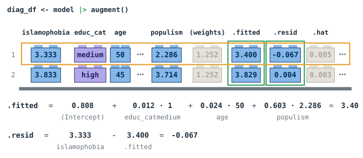 augment(). Below it a baseplate with two rows and the towers islamophobia (3.333, 3.833), educ_cat (medium, high), age (50, 45), then grey ellipses, populism (2.286, 3.714), in grey (weights) (1.252, 1.252), with green borders .fitted (3.400, 3.829) and .resid (-0.067, 0.004), in grey .hat (0.005, 0.003) and ellipses again. Row 1 has an orange border. Below it two lines of calculation: .fitted = 0.808 + 0.012 · 1 + 0.024 · 50 + 0.603 · 2.286 ≈ 3.40, with the grey labels (Intercept), educ_catmedium, age and populism under the values; .resid = 3.333 - 3.400 = -0.067, with islamophobia and .fitted underneath.">](Bilder/figuren/en/k09-augment.svg){kind=link}